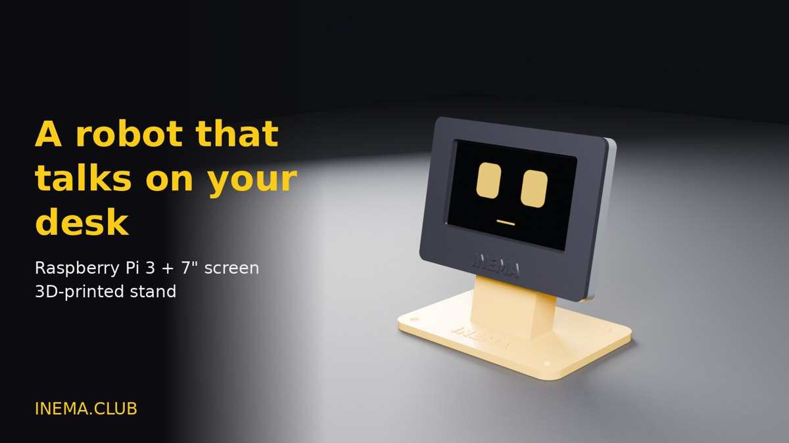
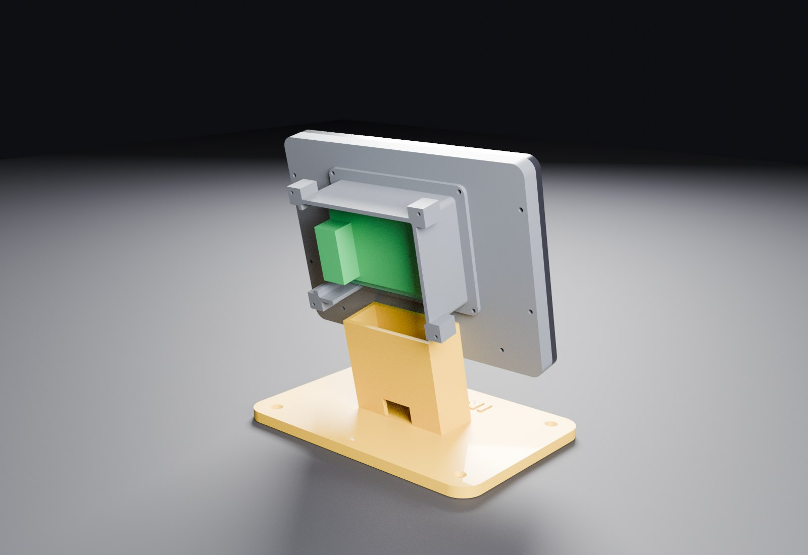
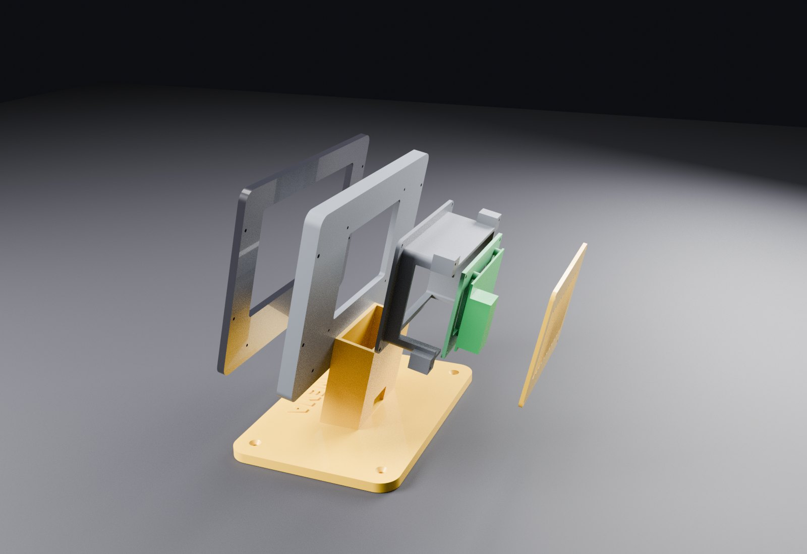
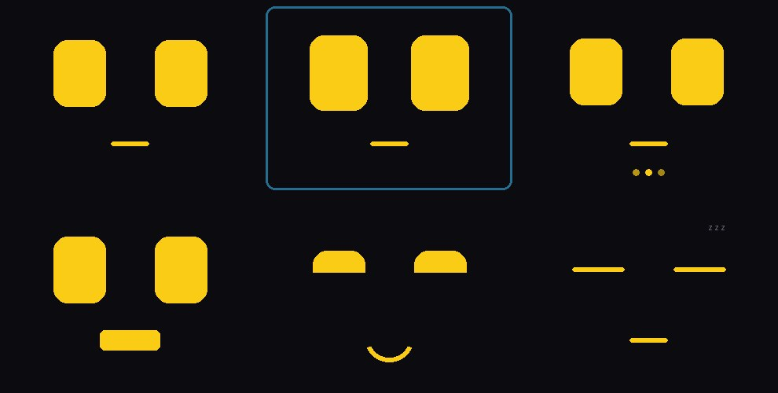

Talk to your Jarvis without opening your phone or computer: imagine touching the screen, asking anything out loud, and watching the robot’s face think, speak, and smile with a response from your own Jarvis. That’s what this project puts together: a Raspberry Pi 3 behind a 7-inch screen, in a nice 3D-printed stand that attaches to your desk. The stand works with the Pi in a case or without one. The parts and software are here; the assembly has been checked on a computer and has not yet been printed or assembled.
Image generated from the actual 3D model (Blender). The robot has not been printed yet.
5–6printed parts (6 if your Pi doesn’t have a case)
7"touchscreen, 800 × 480
2ways to use the Pi: with and without an enclosure
210 × 140mm base, with 4 screws on the table
211mm in total height
0motors and solder joints
In short
Robô conversa is a 3D-printed desktop stand for the Raspberry Pi 3 with the official 7-inch screen. An animated face (eyes and mouth in INEMA yellow) runs on the stand. You touch the screen and speak, and the Pi sends your voice to your Jarvis server, which responds; the robot plays the response and moves its mouth in sync. You need a desktop 3D printer large enough (the 256 mm Bambu Lab A1 works), a Raspberry Pi 3, the screen, a USB microphone, and a small speaker. The design and software were checked on a computer, with automated tests and a mock Jarvis server; nothing has been printed or connected to a real screen yet. Jarvis needs a route /conversa (the contract is further down).

How it talks
Tap, speak, listen
The Pi is lightweight: it only records, sends the audio, and plays the response. Your Jarvis server understands the speech and thinks. The face changes state at each step.
1
Listening
You tap the screen. The frame turns blue and the eyes grow. The Pi records through the USB microphone.
2
Thinking
You tap again (or 12 s pass). The audio goes to Jarvis, and the eyes look up with three dots.
3
Speaking
The reply plays through the speaker. The mouth opens according to the volume of the response; the microphone never moves it.
4
Happy
Done: smiles for one second, then returns to idle, blinking and looking around.
Live preview of the face (software/rosto/index.html) in all six states. The last one, sleeping, appears for 2 seconds when the server doesn’t respond.
If the server goes down, the robot doesn’t freeze: it shows its sleeping face for 2 seconds, then returns to idle, ready to try again (this has an automated test).
The project
Large screen, sturdy stand, screwed to the desk
The screen tilts back 12°, sits 211 mm above the floor, and has a 210 × 140 mm base that you screw to the desk through four countersunk holes. The neck is hollow: the cables run down inside it and come out the back.
Render of the actual CAD file. The display is shown with the software’s face.
Front viewThe 6 mm frame covers the screen edge; INEMA is embossed on the chin and base.Side view12° tilt, with the Pi pocket behind the screen, above the neck.From behind, with caseYour Pi’s case slides into the pocket; the cables run down through the neck.
Pi with or without a case
One stand, two ways to mount the Pi
The pocket behind the screen measures 100 × 72 mm and is 44 mm deep. If your Pi already comes in its own case (the plastic one supplied with the Pi), it fits entirely inside the printed pocket. If it doesn’t have a case, the adapter screws the board onto four M2.5 posts, leaving it exposed and protected by the cover. Either way, the printed pocket is part of the project.
With caseFits a Pi case up to 98 × 68 × 30.5 mm. Measure yours before printing. It rests on four supports in the pocket’s corners.

No enclosureThe adapter holds the board with the USB/Ethernet port on the right, where the pocket wall is open.

Exploded view of the actual model (the screen is omitted). Order, front to back: frame, screen, back plate, Pi pocket, cover.
Compact version
Small head: Pi 3 + 2.4″ screen
The 2.4″ screen is a board that plugs directly into the Pi’s 40-pin connector (like a HAT), so the Pi sits right behind it and the head measures 112.2 × 63.7 × 30.1 mm (the depth adds the 27.1 mm front and the cover). The speaker is built into the screen board, and the microphone is a USB mic that plugs into the side. The face is drawn directly on the screen, without a browser.

The compact version’s face (preview generated by the program itself, 320 × 240). Same states as the large version.
Three parts
Head front (112.2 × 63.7 × 27.1 mm), lid (112.2 × 63.7 × 9.5 mm), and post with base (130 × 105 × 69 mm). The lid has four M2,5 posts that hold the Pi; the power cable runs down through the hollow post.
What you get
Raspberry Pi 3, 2.4″ screen for Pi with built-in speaker, mini USB microphone, and a 5 V / 2.5 A power supply. No HDMI and no Pi case.
Checked on the computer
No collisions between the parts, Pi, and screen; a USB plug fits in from the side; the cable reaches the post. Two negative tests show that a thicker Pi or a screen that is 6 mm larger will collide. Estimated mass: 184 g.
1
Set up the Pi and screen
Install the system, plug the screen into the 40-pin connector, and install the driver recommended by the screen’s seller. Then check whether the screen’s framebuffer exists (usually /dev/fb1) and the touch device:
sudo apt install python3-pil python3-numpy
ls /dev/fb*
ls /dev/input/by-path
2
Run the bridge and face
Download and extract the robo-conversa-software.zip (in the downloads), go into the extracted folder and install these too sudo apt install alsa-utils espeak-ng (recording and backup voice). The bridge is the same as in the larger version. The small face draws to the framebuffer and communicates with the bridge. The numbers /dev/fb1 e event0 are examples: use the ones that appear on your Pi. Without the screen driver and these adjustments, this version probably won’t work right away.
To see the face without a screen: python3 rosto/rosto_fb.py --png falando rosto.png. 3.5″ screen (480 × 320): ROSTO_LARG=480 ROSTO_ALT=320. Screen mounted sideways: ROSTO_GIRO=90.
What has NOT been verified in the compact version: the 2.4″ screen dimensions are typical of a Pi Zero format board (65 × 56.5 mm), and the listing doesn’t show its outline, so measure yours with calipers and change only the numbers at the top of cad/gerar_compacta.py (the tests show whether it still fits). Also not tested: the screen driver, touch input, the board’s sound (PWM audio, basic quality), the Pi’s temperature inside the closed case, or any printing.
And the large version, with a 7″ screen: does it have a microphone and speaker?
The design has room for both, but they haven’t been tested with real audio yet. The microphone (a small 14 × 14 mm board, such as the INMP441) sits in a pocket at the top of the frame, with a sound hole facing up and a channel for the wire. The round 40 mm speaker sits in an enclosure beside the neck, facing up, attached to the base with two M3 screws underneath (part Speaker enclosure, in the downloads). If you prefer, the USB microphone and small speaker are still options.
3D model
Turn the robot in your hand
This is the project’s assembly file (the same GLB as the download). Drag to rotate, and use two fingers or the mouse wheel to zoom in. The white box shows the maximum space for the Pi case.
Drag to rotate
If the model doesn’t appear, download the GLB and open it in any 3D viewer.
Estimate (PLA at ~35%, 300 g screen, 80 g Pi); weigh it after assembly
Screw the base to the desk. According to the model calculations, without the screws, a force of about 2.2 N at the top of the screen is enough to tip the robot backward, and touching the screen means pushing it. With four 4 mm wood screws, it stays in place.
Technical details
The kit: for printing and assembly
You don’t need this part to understand the project. To assemble it, follow this order: materials, printing, physical assembly, software, and testing.
What you need
Common electronics and hardware parts. Prices vary; check before buying.
1×
Raspberry Pi 3 (B or B+)
With a 5 V / 2.5 A power supply and a 16 GB or larger microSD card. With or without a case.
1×
7" Raspberry Pi touch screen
Original (800 × 480). The Touch Display 2 has a different outline: see the parameters in the cad/gerar.py.
1×
USB microphone
The Pi 3 has no microphone input. Any small USB microphone will work.
1×
Speaker
With a 3.5 mm P2 plug (the Pi 3 has an output) or USB.
optional.
Built-in microphone and speaker
Large version: 14 × 14 mm microphone board and 40 mm, 3 W speaker, with a printed enclosure. Compact version: 2.4″ screen with speaker and a mini USB microphone.
6×
M3 × 16 screw
Fasten the frame (4 on the sides, 2 at the chin).
4×
M3 × 12 screw
Fasten the neck to the board’s chin.
4×
M3 × 8 screw
Fasten the Pi pocket to the back plate. Only if the Pi doesn’t have a case: plus 4 for the adapter.
4×
M3 × 10 screw
Close the cover. Only without a case: 4 M2.5 × 6 screws fasten the board to the adapter posts.
4×
4 × 25 wood screw
Secure the base to the desk (countersunk head).
up to 0.9 kg
Filament
0.9 kg if the parts were solid; about half that with 15–25% infill. PLA or PETG, not yet tested. Three nice colors: graphite, black, and yellow.
A1
3D printer
A 256 mm bed (Bambu Lab A1) fits all the parts.
ideal
Caliper
To measure the display, Pi, and its case before printing.
To connect the display to the Pi, use the DSI ribbon cable and the two power wires that come with the display. The mount has no built-in power supply.
Download and start with the smallest
An STL file is the 3D model. It still needs to be sliced for your printer; it isn’t the ready-to-use print instructions. All STL files are already oriented for printing.
These volumes are for solid parts; with 15–25% infill, material use is much lower, and Bambu Studio shows the actual amount when slicing. The ZIP files don’t include G-code or a validated 3MF profile. View the verification report (JSON).
Print in this order
Print the small parts first to test anything that depends on your measurements, and print the base last. Reminder: these are study parts, and none have been test-printed yet; use little filament until the first fit check.
1
Measure before printing
Use calipers to measure your Pi case (or bare board) and the screen. The case fits if it’s up to 98 × 68 mm across the front and 30.5 mm deep. If it’s larger, change BOLSO_W/H/D no cad/gerar.py and generate it again (the script warns you if anything collides).
2
Choose your printer
In Bambu Studio, select the Bambu Lab A1, a 0.4 mm nozzle, and the actual filament. A 0.2 mm layer height, 3 walls, and 15–25% infill are an untested starting point.
3
Open one part at a time, without rotating it
Keep it at 100%. Each STL is already in its print orientation (frame with INEMA facing up, backplate on its back, case and lid with the flange on the bed). Check the expected size in the downloads table; a very different measurement means the scale or orientation is wrong.
4
Fit test
Print the cover and Pi pocket, and check that your Pi case (or the Pi on the adapter) fits in the pocket. Then print the frame over the back plate with the actual screen inside: the screen should sit in place without forcing it. Only then print the base and neck.
5
No stand, limited support
The parts are designed to print without supports: the angled neck tilts only 12°, and the cable outlet is a short arch. If your slicer asks for supports anywhere, let us know in the project form.
Assemble in six steps
Assemble the structure with the screen before powering on the Pi. All screws are M3 socket-head screws.
1
Screen on the rear plate
Fit the screen into the recess in the back plate, with the glass facing forward. The screen driver board fits through the 104 × 72 mm window; make sure nothing scrapes.
2
Frame from above
Place the frame at the front and fasten it with the 6 M3 × 16 screws inserted from behind the plate (4 on the sides, 2 at the chin). Don’t overtighten: the threads are made directly in the part.
3
Neck to chin
From the top of the neck (which is hollow), pass the 4 M3 × 12 screws through the holes in the front wall and screw them into the plate’s chin, using a long screwdriver. The stand is already tilted 12°.
4
Pi pocket on the plate
Fasten the printed pocket with 4 M3 × 8 screws through the flange. Connect the screen’s DSI cable to the Pi and the two power wires to the Pi (or power the screen with another cable, as its documentation describes).
5
Pi inside, cables facing down
With a case: slide the Pi case into the pocket until it rests on the supports. Without a case: screw the adapter onto the supports (4 × M3 × 8), then screw the board onto the posts (4 × M2.5) with the USB/Ethernet port on the right. The microphone, speaker, and power supply cables run down through the bottom opening, through the neck, and out the opening in the back wall.
6
Lid and stand
Close it with the lid (4 × M3 × 10). Mark the four base holes on the desk, drill 2.5 mm pilot holes, and secure with wood screws.
Heat and cables. The Pi 3 gets hot, and the pocket is closed by a lid with 11 openings. We haven't measured the temperature inside it yet: after assembly, run the robot for 30 minutes and touch the lid. If it's too hot, remove the lid or enlarge the openings.
Get the software running
All in pure Python (standard library only), with no packages to install. Running the bridge and face doesn’t use any third-party APIs: the only network call is to your Jarvis.
1
Set up the Pi
Install Raspberry Pi OS (with desktop) and connect it to the network. In the Pi terminal:
sudo apt update
sudo apt install -y chromium alsa-utils espeak-ng # em versões antigas do Raspberry Pi OS o pacote se chama chromium-browser
arecord -l # confira que o microfone USB aparece
aplay -l # e a caixinha de som
2
Copy the software
Download the software ZIP above, copy it to the Pi, and extract it. Go into the extracted folder:
unzip robo-conversa-software.zip
cd robo-conversa-software
3
Test without Jarvis or a microphone
The tests start a fake Jarvis and check the entire conversation (face states, token, mouth synced to the reply audio, and server failure):
python3 testes/test_ponte.py
Must end with OK (4 tests).
4
Point to your Jarvis
Set your server address and, if you have one, the token. The robot talks to POST <JARVIS_URL>/conversa:
export JARVIS_URL=http://ENDERECO-DO-SEU-SERVIDOR:PORTA
export JARVIS_TOKEN=seu-token # opcional
export ROBO_VOZ=pt-br # voz de reserva do espeak-ng (en-us, es...)
python3 ponte/robo.py
5
Open the face in full screen
In another terminal on the Pi, with the 7" screen connected:
chromium --kiosk --noerrdialogs http://127.0.0.1:8765/ # ou chromium-browser
Touch the screen to speak, then touch it again to send (the Space key does the same). The Pi 3 is modest: the first time Chromium opens may take a while.
What your Jarvis needs to return
The contract is small and is the part you adapt to your server:
POST /conversa {"audio_wav_b64": "...", "texto": "...", "sessao": "robo-mesa"}
→ {"ouvido": "o que entendeu", "resposta": "texto",
"audio_wav_b64": "opcional (WAV 16 bits)"}
The robot sends the recorded audio (WAV 16 kHz, mono). Your server transcribes it, thinks, and returns the response text. If it also returns audio, the robot plays it; otherwise, it speaks the text with the espeak-ng from the Pi itself (basic voice). Your server chooses the voice and AI services, using your rules and credentials; the robot doesn’t store any keys.
Safety: the token and your voice travel to Jarvis over the network. Use a private network, VPN, or HTTPS, not open HTTP on the internet. The robot bridge only listens on 127.0.0.1 (the routes /ouvir, /parar e /texto don’t have passwords because they only accept local access on the Pi itself).
The route /conversa doesn't exist in anyone's Jarvis yet. You (or your coding agent) need to expose this route on the server. In the tests, it is simulated by ponte/jarvis_falso.py. A real conversation with your Jarvis, the microphone, and the speaker have not been tested on hardware yet.
Open automatically when the Pi starts
When everything works, create two services (one for ponte/robo.py, another for Chromium in full screen) or put both commands in ~/.config/autostart. If the conversation over the Pi 3’s Wi-Fi is slow, use a network cable.
What was checked on the computer
The CAD generator (cad/gerar.py) assembles the parts in code and runs these checks every time. They apply only to the model; nothing has been tested on the bench.
Parts
Closed meshes, positive volume, one body per STL, all under 256 mm and resting on the bed on the correct face (contact area measured).
Fittings
No intersections between assembly parts; the screen, driver board, 98 × 68 × 30.5 mm Pi case, and Pi without a case with adapter all fit without collisions. A negative test confirms that a larger case collides.
Cables and stability
A 12 mm cable channel runs from the enclosure to the neck opening without touching anything. Center of mass is 73.2 mm from the front and 66.8 mm from the back of the base.
What has NOT been verified: slicing and printing; the screen’s and Pi’s actual holes and connectors (from the data sheet); the exact position of the visible area; heat from the Pi in its pocket; the strength of the screw bosses; the actual microphone, speaker, and Jarvis. Measure everything with calipers before printing.
Where the project lives
Done
Mechanical study and software on the computerSix parts designed from the official measurements, with the checks above; animated face and bridge to Jarvis with 4 automated tests.
Now
Bench testPrint the cover and pocket, measure your Pi case, assemble it with the actual screen, and run the robot with a microphone and speaker.
Then
The /conversa route on your JarvisExpose the route on the server, choose the voice and transcription on its end, and test the conversation from end to end.
Future
Wake word and movementWake the robot by voice (without touching it) and, perhaps, a rotating base. None of this has been decided.
Frequently asked questions
Do I need the Arduino?
No. The initial idea used an Arduino Uno just to draw the eyes, but with the Raspberry Pi, the Pi itself draws the face and talks to the server. One fewer part, no firmware, and no serial cable.
Does it work with the Raspberry Pi 4 or 5?
The pocket fits the board and the hole pattern is the same, but the ports are in different places (and the Pi 5 gets hotter). Test with the adapter before printing everything, and check the connectors.
Does it work with another 7" screen?
Only if the outline is similar. The Touch Display 2 (189.5 × 120 mm) and generic HDMI screens have different dimensions: change the parameters at the beginning of the cad/gerar.py and generate it again.
Can the robot already talk?
Not really yet. The face, recording, and bridge are ready and tested with a mock server. The route is still missing /conversa in your Jarvis and the test with a microphone and speaker.
Does the conversation use a paid API?
The robot only calls the server you specify in JARVIS_URL. What this server uses to understand your voice and respond is your choice, with your own costs and permissions.
Can I use it without a touch screen?
Yes: the Space key does the same thing as a tap. On a USB keyboard, or use curl -X POST http://127.0.0.1:8765/ouvir e /parar.